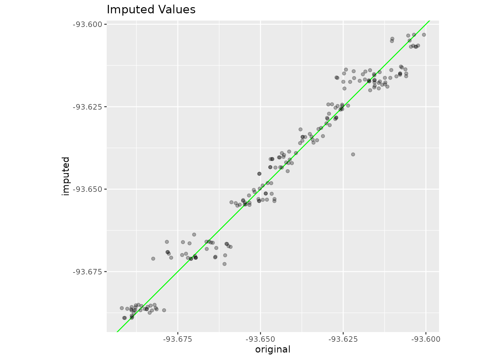

step_impute_linear creates a specification of a recipe step that will
create linear regression models to impute missing data.
step_impute_linear( recipe, ..., role = NA, trained = FALSE, impute_with = imp_vars(all_predictors()), models = NULL, skip = FALSE, id = rand_id("impute_linear") ) # S3 method for step_impute_linear tidy(x, ...)
| recipe | A recipe object. The step will be added to the sequence of operations for this recipe. |
|---|---|
| ... | One or more selector functions to choose variables. For
|
| role | Not used by this step since no new variables are created. |
| trained | A logical to indicate if the quantities for preprocessing have been estimated. |
| impute_with | A call to |
| models | The |
| skip | A logical. Should the step be skipped when the
recipe is baked by |
| id | A character string that is unique to this step to identify it. |
| x | A |
An updated version of recipe with the new step added to the
sequence of existing steps (if any). For the tidy method, a tibble with
columns terms (the selectors or variables selected) and model (the
bagged tree object).
For each variable requiring imputation, a linear model is fit
where the outcome is the variable of interest and the predictors are any
other variables listed in the impute_with formula. Note that if a variable
that is to be imputed is also in impute_with, this variable will be ignored.
The variable(s) to be imputed must be of type numeric. The imputed values
will keep the same type as their original data (i.e, model predictions are
coerced to integer as needed).
Since this is a linear regression, the imputation model only uses complete cases for the training set predictors.
Kuhn, M. and Johnson, K. (2013). Feature Engineering and Selection https://bookdown.org/max/FES/handling-missing-data.html
data(ames, package = "modeldata") set.seed(393) ames_missing <- ames ames_missing$Longitude[sample(1:nrow(ames), 200)] <- NA imputed_ames <- recipe(Sale_Price ~ ., data = ames_missing) %>% step_impute_linear( Longitude, impute_with = imp_vars(Latitude, Neighborhood, MS_Zoning, Alley) ) %>% prep(ames_missing) imputed <- bake(imputed_ames, new_data = ames_missing) %>% dplyr::rename(imputed = Longitude) %>% bind_cols(ames %>% dplyr::select(original = Longitude)) %>% bind_cols(ames_missing %>% dplyr::select(Longitude)) %>% dplyr::filter(is.na(Longitude)) library(ggplot2)#> #>#> #> #>ggplot(imputed, aes(x = original, y = imputed)) + geom_abline(col = "green") + geom_point(alpha = .3) + coord_equal() + labs(title = "Imputed Values")